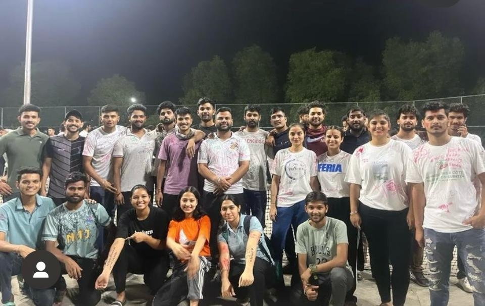

ATHLETIC FEST
An athletics fest is an event that involves various athletic competitions, typically held over the course of one or several days.
These events may include track and field events such as sprints, hurdles, long- distance running, high jump, long jump, triple jump, shot put, discus throw and javelin.
Intense hard work is followed by full appreciation from authorities, prize distribution ceremony.